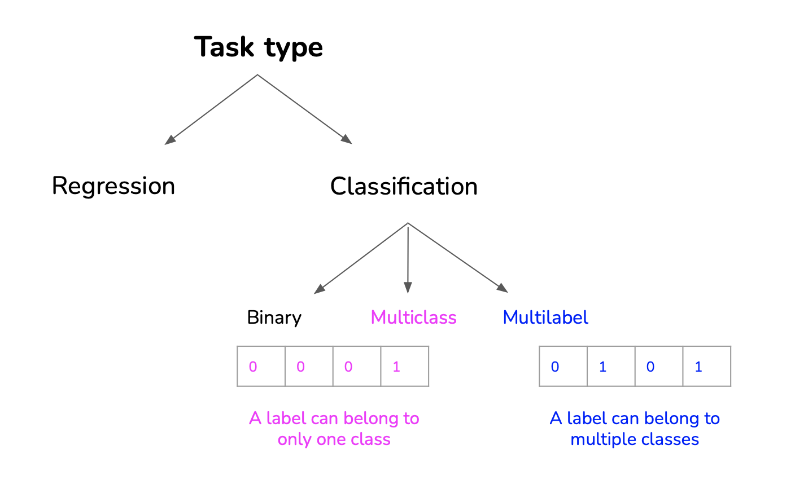

Introduction
- Framing: transforming the business problem in ML problem,
- Objectives: transforming the business objectives in ML losses,
- Constraints: time & budget, privacy
Framing

For example (from CS329 lecture 2), predicting the next app a user will use is complex in multiclass framework as each time an app is added or removed the model must be retrained. In multilabel framework it is much easier just by taking the app with max probability: in this framework the number of apps does not impact the model.
Objectives
ML objectives:
- Performance,
- Latency,
- Etc.
Business objectives:
- Cost,
- ROI,
- Regulation and Compliance
Business objectives can be:
- Direct: increasing sales (ads, conversion rates), cutting costs,
- Indirect: increasing customer satisfaction, increasing time spent on a website.
Also sometimes a model should optimise different objectives. In this case 2 options are possible:
- 1 model optimizing combined loss,
- Multiple models: each optimizing one objective.
It is better to make on model per objective and then to weight their decision for the final decision instead of a model that optimises a weighted loss. Using one model per objective, if the weights of each objective changes it is easy to update the prediction without retraining the model:
\[loss_{total} = \sum_{i=1}^N \alpha_i loss_{obj_i}\]
Constraints
Time & Budget:
- Time: Rule of thumb: 20% time to get initial working system, 80% on iterative development,
- Budget: Data, resources, talent
Tradeoff Time & Budget:
- More (powerful) machines,
- Hire more people to label data faster,
- Run more experiments in parallel,
- Buy existing solution
Privacy:
- Annotation: Can data be shipped outside organizations for annotation?
- Storage: What kind of data are you allowed to store? How long can you store it?
- Third-party solutions: Can you share your data with a 3rd party (e.g. managed service)?
- Regulations: What regulations do you have to conform to?
Technical constrains:
- Competitor,
- Legacy systems.
Resources
See: